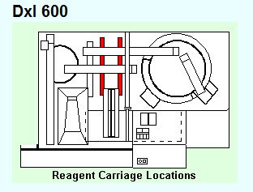
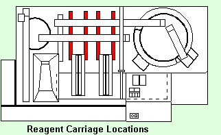
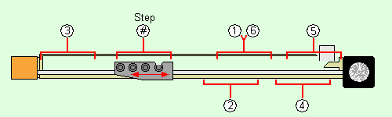
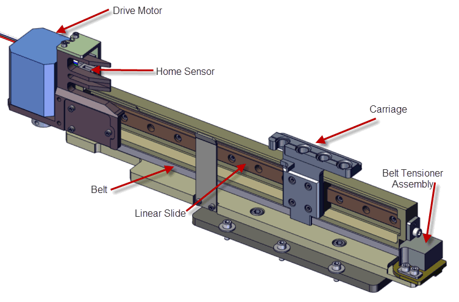
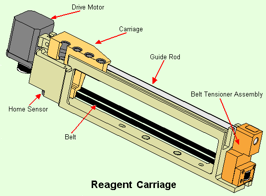
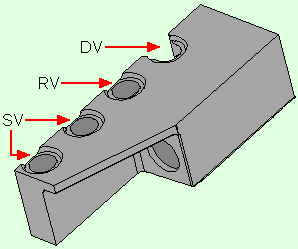

Reagent Carriage Operating Principles
Purpose
This document details the operating principles for the reagent carriage module
Module Function
The functions of the reagent carriages are:
- Receives or presents SVs to the sample pick-and-place.
- Receives empty RVs and DVs from the sample pick-and-place.
- Positions vessels for sample transfer and reagent dispense by the reagent pipettor.
- Receives or presents RVs to the incubator pick-and-place.
- Ejects DVs to waste.
Location


Operational Overview
For an overview of the reagent carriage operation, refer to the figure, the numbers in the figure, and the numbered steps.

| 1 | The carriage moves to a predetermined alignment position where it receives a sample vessel from the sample pick-and-place. The SV is placed in one of the two front vessel positions of the carriage. |
| 2 | The carriage moves to a predetermined position where it receives an empty reaction vessel from the sample pick-and-place. The RV is placed in the third vessel position of the carriage.
Note: If an online sample dilution is required, then the sample pick-and-place simultaneously delivers an empty dilution vessel in the rear vessel position of the carriage.
|
| 3 | The carriage moves forward to allow for reagent pipetting, sample dilution if necessary, and sample transfer by the reagent pipettor. |
| 4 | After pipetting, the carriage moves back to a predetermined alignment position where the incubator pick-and-place transfers the RV to the analytical module. |
| 5 | The carriage moves to the back position where the DV is ejected out of the side of the carriage into a waste chute. The waste chute delivers the DV to solid waste.
Note: If an online sample dilution is required, then the sample pick-and-place simultaneously delivers an empty dilution vessel in the rear vessel position of the carriage.
|
| 6 | The carriage moves to a predetermined position where the sample pick-and-place transfers the SV to the sample storage module or to the waste if no more tests are to be done on the sample. |
Component Locations


Component Functions
| Component | Function and description |
|---|---|
| Belt | A toothed belt used with the stepper motor and a drive gear for motion control. |
| Carriage | Accepts and holds vessels in a recessed hole for transfer by the sample pick-and-place or the incubator pick-and-place. |
| Motor, Drive | Software-controlled stepper motor controls the horizontal motion and positions the carriage into the desired position. |
| Rod, Guide | Round metal shafts that allow horizontal movement of the reagent carriage. |
| Sensor | Optical sensor used to Home the reagent carriage. Movement is then based on motor steps in reference to the home position. |
| Tensioner, Belt | Spring-loaded assembly that automatically provides belt tension. |
Vessel Positions

Interacting Devices
The reagent carriages interact with these modules:
- Reagent pipettors.
- Triple-headed sample pick-and-place.
- Incubator pick-and-place.